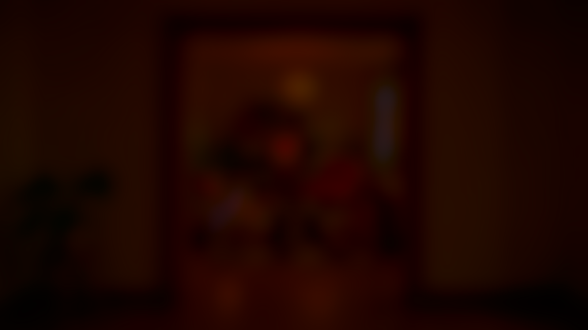

Touchez · faites bouger↓DIRECTION ARTISTIQUE · DESIGN GRAPHIQUE / BORDEAUXDirection artistique.
Direction artistique.
Design graphique.
Étudiant en M1 en direction artistique à Bordeaux, je recherche une alternance. Je crée des identités visuelles, des animations et des vidéos pour des marques et des projets qui ont quelque chose à dire.
Entrez dans mon studio : chaque objet ouvre un projet.
LE SEUIL
Le studio s’ouvre.